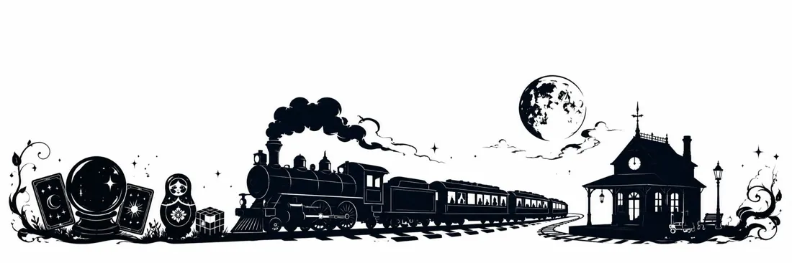
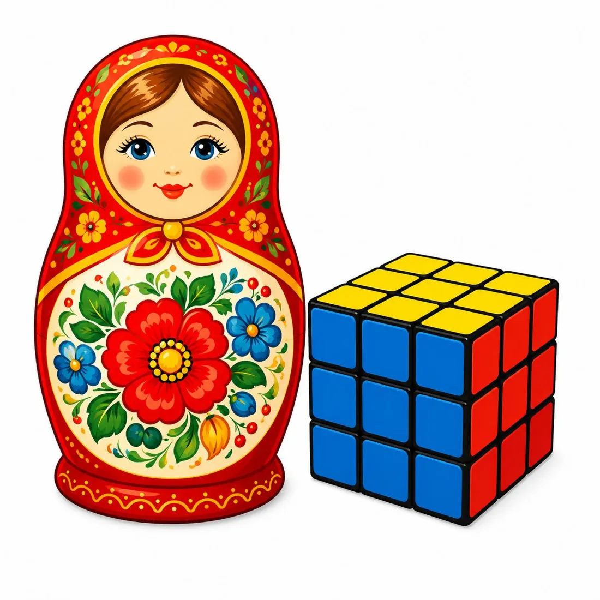
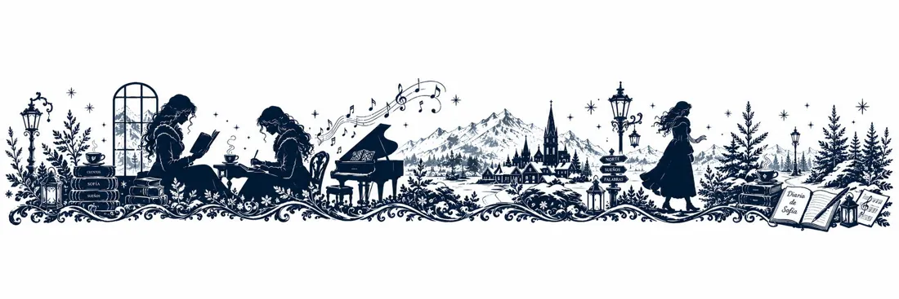
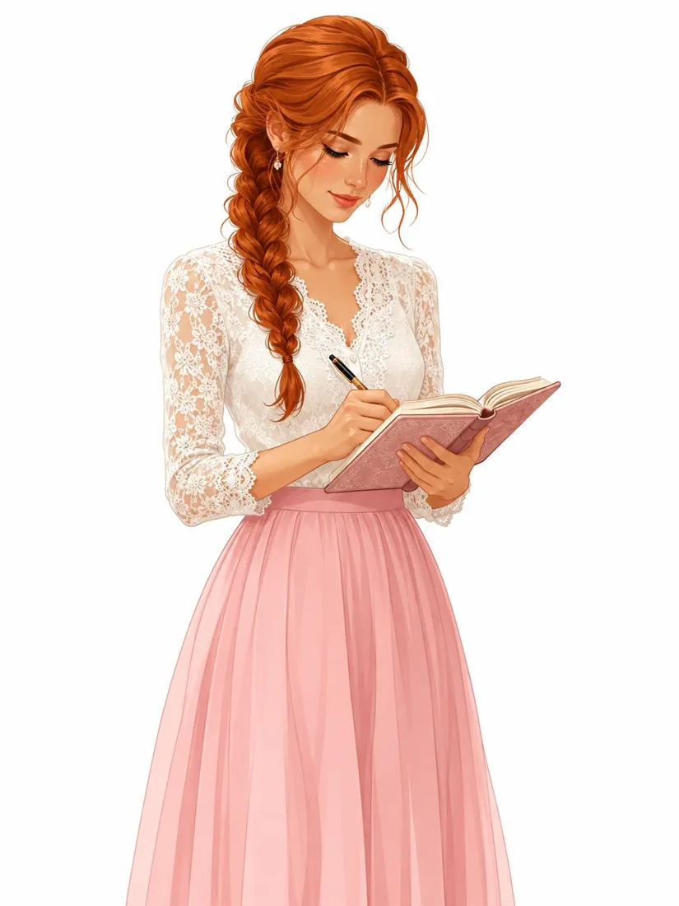
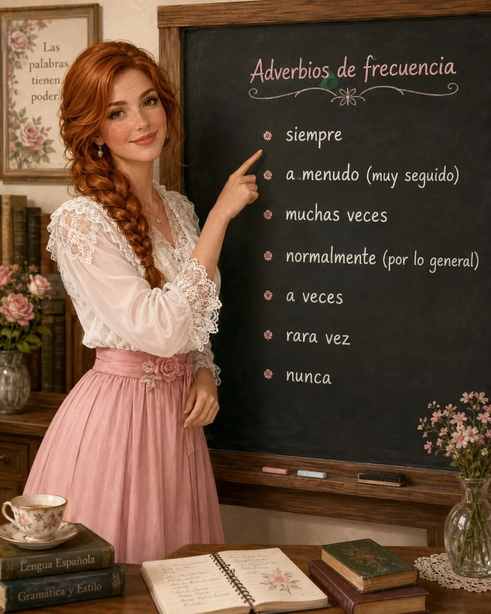
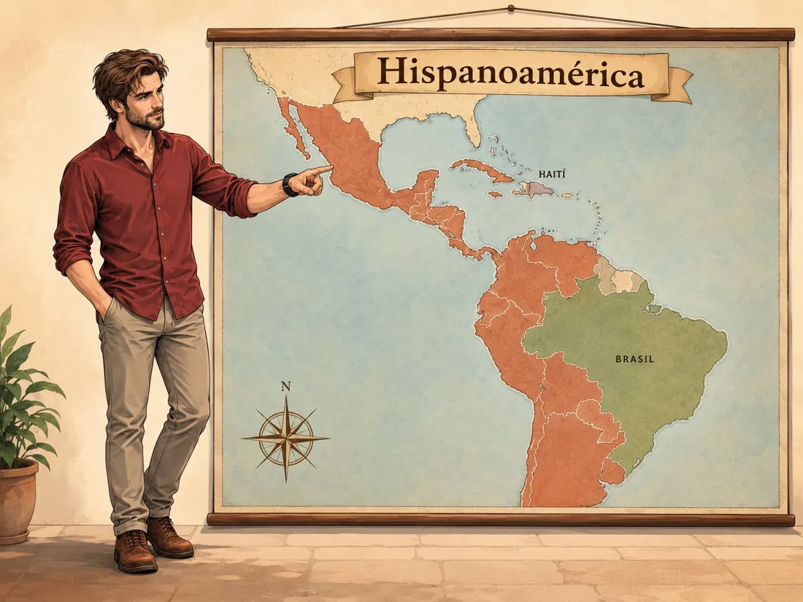
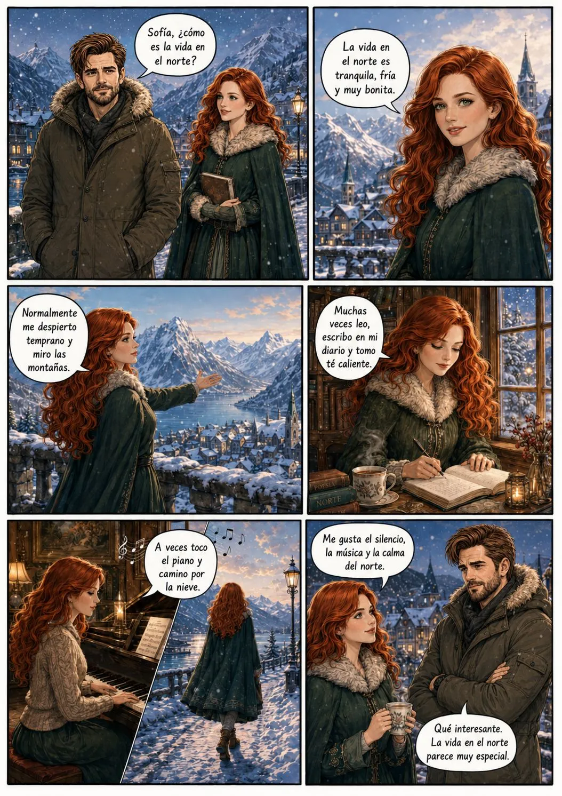
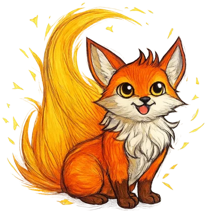

Gustos, recuerdos y rutinas
Hablar de lo que te gusta, contar lo que pasó ayer y describir un día de tu vida.
Me gusta
Ver gustar y encantar en Gramática.
1 Leer el diálogo
Me gustan mil cosas, pero contigo todas me encantan.
Gramática · gustar, encantar, preferir
Usamos gustar para hablar de gustos.
| Pronombre | + singular / infinitivo | + plural |
|---|---|---|
| (a mí) me | gusta la música · leer | gustan las ciudades tranquilas |
| (a ti) te | ||
| (a él / ella / usted) le | ||
| (a nosotros/as) nos | ||
| (a vosotros/as) os | ||
| (a ellos / ellas / ustedes) les |
encantar = gustar mucho
A Natalia le encanta leer novelas.
preferir = elegir una cosa
Luis prefiere los lugares tranquilos.
También / tampoco
—No me gustan los lugares con ruido. —A mí tampoco.
2 Comprensión del diálogo
Lee el diálogo y marca Verdadero (V) o Falso (F).
- Natalia dice que le gusta caminar por la ciudad.
- Natalia prefiere los lugares con mucho ruido.
- Luis dice que le gusta tocar el piano.
- A Luis no le gusta aprender idiomas.
- A los dos les gusta caminar.
- Natalia quiere pasear por Buenos Aires con Luis.
3 Completar: G = gustar; E = encantar
- A Natalia caminar. (G)
- A Natalia las novelas. (E)
- A Natalia la música clásica. (G)
- A Luis tocar el piano. (G)
- A los dos los lugares tranquilos. (G)
- A Natalia no los lugares ruidosos. (G)
4 Responder con tus ideas
¿Qué te gusta hacer en tu tiempo libre?
¿Qué tipo de música escuchas normalmente?
¿Prefieres los lugares tranquilos o los lugares con mucho ruido? ¿Por qué?
¿Te gusta caminar por lugares nuevos?
Invita a una persona a pasear contigo. Escribe una frase.
¿Dónde estuviste ayer?
Ver el pretérito indefinido en Gramática.

1 Leer el diálogo

Hasta en mis sueños de ayer, el destino me llevaba hacia ti.
Gramática · el pretérito indefinido
Usamos el pretérito indefinido para hablar de acciones terminadas en el pasado. Suele ir con ayer, anoche, el año pasado, hace muchos años, una vez…
Ayer Natalia soñó con un tren fantasma. · Alicia vio algo extraño en las cartas. · Luis armó el cubo de Rubik.
Verbos regulares
| soñar (-ar) | comprender (-er) | subir (-ir) | |
|---|---|---|---|
| yo | soñé | comprendí | subí |
| tú | soñaste | comprendiste | subiste |
| él / ella / usted | soñó | comprendió | subió |
| nosotros/as | soñamos | comprendimos | subimos |
| vosotros/as | soñasteis | comprendisteis | subisteis |
| ellos / ellas / ustedes | soñaron | comprendieron | subieron |
Verbos importantes (irregulares)
ver → vi, viste, vio · hacer → hice, hiciste, hizo · tener → tuve, tuviste, tuvo · estar → estuve, estuviste, estuvo · ir / ser → fui, fuiste, fue · traer → traje, trajiste, trajo · poder → pude, pudiste, pudo · elegir → elegí, … eligió, eligieron
¡Ojo con la ortografía en «yo»!
buscar → busqué · llegar → llegué · empezar → empecé
2 Leer el diálogo y marcar verdadero (V) o falso (F)
- Alicia vio algo extraño en las cartas.
- Natalia soñó con una casa antigua.
- Natalia subió al tren fantasma en su sueño.
- Alicia nunca viajó en el tren fantasma.
- Alicia encontró una mesa con cartas en un vagón vacío.
- Luis apareció con una matrioshka en la mano.
- El cubo de Rubik abrió una pequeña puerta entre dos mundos.
- Natalia trajo el manual Aquella vez.
3 Unir cada pregunta con la respuesta correcta
- a. Una mesa con cartas.
- b. Una pequeña puerta entre dos mundos.
- c. Lo soñó anoche.
- d. El manual Aquella vez.
- e. Vio un tren antiguo, una estación oscura y una puerta abierta.
- f. Escuchó una voz.
- ¿Qué vio Alicia en las cartas?
- ¿Cuándo soñó Natalia con el tren fantasma?
- ¿Qué escuchó Natalia en el sueño?
- ¿Qué encontró Alicia en el vagón vacío?
- ¿Qué abrió el cubo de Rubik?
- ¿Qué trajo Natalia?
4 Completar el texto con las palabras del recuadro
Toca una palabra para ponerla en el hueco marcado. Toca un hueco lleno para vaciarlo.
LAS PEORES VACACIONES DE LUIS EN EGIPTO
El año pasado Luis viajó a Egipto para pasar sus . Al principio estaba muy contento, pero todo empezó mal en el . Su vuelo llegó tarde y, cuando fue a buscar su equipaje, no encontró su .
Después tomó un para ir al , pero el conductor no conocía bien la dirección. Luis llegó cansado y con mucho . En la habitación no había aire acondicionado y tampoco había suficiente para beber.
Al día siguiente, Luis visitó las . Quería sacar muchas , pero se olvidó la cámara en el hotel. Luego subió a un , pero el animal caminó muy rápido y Luis casi se cayó.
Más tarde, Luis perdió el y no pudo encontrar el camino correcto. Entró en un para descansar, pero comió algo muy picante y se sintió .
Por la , quiso comprar un recuerdo, pero descubrió que no tenía suficiente . Al final, Luis a Argentina muy cansado. Dijo: «Egipto fue hermoso, pero mis vacaciones fueron un desastre».
Un día de mi vida
Ver los adverbios de frecuencia en Gramática.
1 Leer el texto
UN DÍA EN LA VIDA DE SOFÍA
Hola, me llamo Sofía. Vivo en el {norte|norte}, en un lugar {tranquilo|tranquilo}, {frío|frio} y muy bonito. Mi vida parece normal, pero siempre {siento|siento} que hay una música {secreta|secreta} cerca de mí.
{Todos los días|todos_dias} {me despierto|despierto} {temprano|temprano}. Primero abro los ojos y escucho el {silencio|silencio} de la mañana. Después {me levanto|levanto}, {me lavo la cara|lavo_cara} y {me visto|visto}. {Normalmente|normalmente} llevo {ropa cómoda|ropa_comoda}, porque camino mucho durante el día.
Luego {desayuno|desayuno} en la cocina. Tomo {té caliente|te_caliente} y como {pan con mantequilla|pan_mant}. {Mientras|mientras} desayuno, miro por la {ventana|ventana}. {A veces|a_veces} veo {nieve|nieve}, a veces veo {niebla|niebla}, y a veces el {cielo|cielo} está claro y azul.
Después {salgo de casa|salgo}. Camino por las calles tranquilas y {saludo|saludo} a algunas personas. Me gusta caminar {despacio|despacio}, porque así puedo pensar. {Muchas veces|muchas_veces} escucho una {melodía|melodia} en mi cabeza. No sé de dónde viene, pero {siempre|siempre} {vuelve|vuelve}.
Por la mañana estudio, leo y escribo en mi {cuaderno|cuaderno}. También {ayudo|ayudo} en casa y {ordeno mis cosas|ordeno}. Cuando tengo tiempo, {toco|toco} algunas notas en el piano. La música {me calma|calma}, pero también me hace {recordar|recordar} algo que {todavía no|todavia_no} {comprendo|comprendo}.
{Al mediodía|mediodia} {almuerzo|almuerzo} algo simple. Después {descanso|descanso} un poco y leo. Me gustan las historias de viajes, de amor y de lugares {lejanos|lejanos}. A veces {sueño con|sueno_con} conocer a una persona que también escuche la misma melodía.
{Por la tarde|por_tarde} salgo {otra vez|otra_vez}. Camino cerca del {río|rio} o por el {bosque|bosque}. {Respiro|respiro} el aire frío y observo el {paisaje|paisaje}. El norte es {silencioso|silencioso}, pero {nunca|nunca} está {vacío|vacio}. Para mí, cada {árbol|arbol}, cada {piedra|piedra} y cada {nube|nube} tiene una voz.
{Por la noche|por_noche} {vuelvo a casa|vuelvo_casa}. {Ceno|ceno}, preparo un poco de té y escribo en mi {diario|diario}. Escribo lo que hago, lo que siento y lo que escucho. {Antes de dormir|antes_dormir}, miro por la ventana y {pienso en|pienso_en} la melodía.
{Finalmente|finalmente} {me acuesto|acuesto}. {Cierro los ojos|cierro_ojos} y {espero|espero}. A veces la música aparece en mis {sueños|suenos}. Entonces comprendo que mi vida no es una vida {común|comun}. Algo me llama {desde lejos|desde_lejos}, y yo sé que {algún día|algun_dia} {voy a descubrir|voy_a_desc} qué {significa|significa}.

Mi rutina favorita es despertarme con la ilusión de verte.
2 Completar el texto con los verbos del recuadro en presente
EL DÍA DE SOFÍA
Sofía vive en el norte, en un lugar frío y tranquilo. Todos los días temprano. Primero abre los ojos y escucha el silencio de la mañana. Después de la cama, la cara y con ropa cómoda.
Luego en la cocina. Toma té caliente y come pan con mantequilla. Mientras desayuna, por la ventana. A veces ve nieve y a veces ve las montañas.
Después de casa. Sofía por las calles tranquilas y piensa en una melodía misteriosa. Por la mañana libros y en su cuaderno.
Cuando tiene tiempo, algunas notas en el piano. La música la calma y la hace soñar.
Por la tarde, Sofía pasea cerca del río. Por la noche a casa, algo simple y prepara té. Antes de dormir, escribe en su diario. Finalmente y cierra los ojos. A veces la melodía aparece en sus sueños.
3 Completar libremente con los adverbios del recuadro
Usa cada uno una sola vez. Puede haber varias respuestas correctas.
LA MUJER DE ROSA
La mujer de rosa vive en una casa tranquila, con flores y libros antiguos.
se despierta temprano y abre la ventana. prepara una taza de té y lee un libro junto a la mesa.
escribe en su cuaderno, porque tiene muchos pensamientos. camina por el jardín y mira las rosas.
escucha música romántica y recuerda historias del pasado. La mujer de rosa habla de sus secretos, porque es muy misteriosa.
Pero olvida sus sueños. Por la noche, escribe en su diario y espera un día bonito.

Gramática
Los adverbios de frecuencia
Los adverbios de frecuencia
Los adverbios de frecuencia indican cuántas veces hacemos una acción.

Ejemplos
La mujer de rosa siempre toma té por la mañana.
La mujer de rosa a veces escucha música romántica.
La mujer de rosa nunca olvida sus sueños.
Posición en la frase
La mujer de rosa siempre prepara té.
Luis normalmente estudia por la mañana.
Natalia a veces camina por la ciudad.
Siempre prepara té.
Normalmente lee un libro.
A veces escucha música.
La mujer de rosa escribe en su diario muchas veces.
Natalia visita cafés tranquilos a menudo.
Con nunca (antes del verbo), el verbo va en forma afirmativa.
✔ La mujer de rosa nunca olvida sus sueños.
✘ La mujer de rosa nunca no olvida sus sueños.
A veces sueño contigo; siempre te llevo en el corazón.
1 Ordenar las palabras
Toca las palabras en el orden correcto para formar oraciones.
2 Responder las preguntas con frases completas
Usa adverbios de frecuencia. Ejemplo: ¿Con qué frecuencia tomas té? → Normalmente tomo té por la mañana.
¿Con qué frecuencia lees libros?
¿Con qué frecuencia escribes en un cuaderno?
¿Con qué frecuencia escuchas música romántica?
¿Con qué frecuencia caminas por la ciudad?
Cultura
¿Latinoamérica o Hispanoamérica?
¿Latinoamérica o Hispanoamérica?
Las expresiones «Latinoamérica», «América Latina» e «Hispanoamérica» están relacionadas, pero no son sinónimas. Para hablar específicamente de los países americanos donde el español es la lengua principal, en este manual usamos «Hispanoamérica».
Esta denominación incluye Argentina, México, Colombia, Perú, Chile, Cuba, Venezuela, Paraguay, Uruguay y otros países hispanohablantes. También se aplica a territorios como Puerto Rico, que no es un Estado independiente. Brasil forma parte de América Latina, pero no de Hispanoamérica, porque en él predomina el portugués. En Haití se habla principalmente criollo haitiano y francés.
Durante el siglo XIX, pensadores americanos y europeos difundieron la expresión «América Latina», que adoptó diferentes sentidos culturales y políticos.
«Hispanoamérica» se refiere específicamente a los países americanos de habla española, mientras que «América Latina» suele abarcar una región más amplia. En este manual preferimos «Hispanoamérica» para hablar de esa comunidad.

1 Preguntas de cultura
¿Por qué «Hispanoamérica» es más específico que «América Latina»?
¿Qué significa exactamente «Hispanoamérica»?
¿Por qué Brasil no forma parte de Hispanoamérica?
¿En qué siglo se difundió el concepto de «América Latina»?
Historieta
Luis visita a Sofía en el norte. Toca la imagen para ampliarla.

Notas importantes
Escribe aquí lo que quieres recordar de la unidad 1. Se guarda en este navegador.
Test de la unidad

¿Listo para el desafío?
Gustos, pretérito indefinido, rutinas, adverbios de frecuencia y cultura. Ejercicios cortos con audio: elige, escucha, ordena y escribe. Tienes 5 corazones.